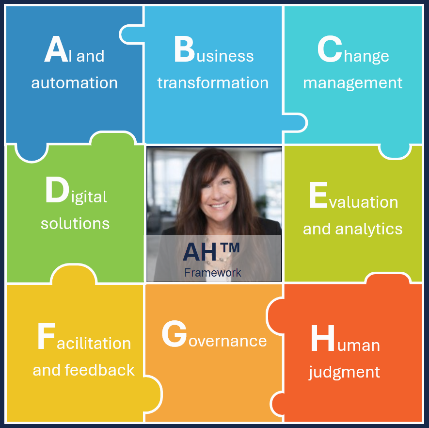

"Eliminate friction that gets in their way by using Ingrid's customized AH FRAMEWORK that aligns people. Optimizes processes. Leverages technology."
Designed and developed a proprietary AI-powered learning strategy that transformed the instructional design lifecycle by integrating Generative AI into analysis, instructional design, content development, workflow automation, and learning evaluation.
By combining instructional design expertise with advanced AI capabilities, developed a scalable approach that accelerated course development, strengthened workforce readiness, and modernized learning operations.
Led data-driven learning initiatives that connected workforce development with measurable business performance across a national 500+ location healthcare organization, Rotech Healthcare.
By combining a strong analytical mindset with instructional design expertise, partnered with executive leadership, Compliance, Human Resources, Operations, and Information Technology to transform workforce data into actionable business insights.
Led enterprise learning initiatives that modernized Humana's annual certification and recertification programs supporting more than 90,000 agents.
Combined instructional design, learning strategy, content optimization, user experience improvements, data analysis, and cross-functional collaboration to improve learner outcomes while maintaining regulatory compliance and meeting critical business timelines.
Beyond redesigning large-scale certification content, developed innovative data analysis solutions that transformed thousands of learner feedback comments into actionable insights, enabling the organization to make more informed decisions about future learning improvements. These initiatives demonstrate leadership in learning transformation, continuous improvement, and data-driven workforce development.
Rotech Healthcare, Dynamic Healthcare, Cigna, Humana, and Centene
Led the design and implementation of enterprise learning, workforce development, and performance improvement initiatives across multiple healthcare organizations supporting home medical equipment, healthcare technology, and health insurance operations.
Partnered with executive leadership, compliance teams, operations, Human Resources, Information Technology, and subject matter experts to build scalable learning programs that strengthened workforce capability, standardized onboarding, improved regulatory compliance, and enhanced operational performance.
Initiatives included enterprise orientation programs, compliance education, leadership development, train-the-trainer programs, learning repositories, performance support tools, certification programs, coaching resources, and workforce analytics that supported more than 5,000 employees across over 500 national locations.
Supported a large-scale workforce transformation initiative for Centene's Medicare Appeals organization by designing and delivering a blended learning solution that prepared multiple business units for an end-to-end appeals process transformation.
Collaborated across project management, learning experience, client-facing, and operational teams to develop scalable learning resources supporting multiple insurance plans, user roles, and regulated business processes.
With a Bachelor's degree in Computer Science and a strong technical foundation, I began my career designing and delivering technical training at Dynamic Healthcare (Cerner) – a healthcare software company, while supporting enterprise software implementation and customer-facing radiology technology solutions.
Bridged the gap between healthcare operations and technology by supporting Radiology Information Systems (RIS), PACS imaging systems, and healthcare applications as an Application Analyst and Technical Trainer, enabling users to adopt complex clinical technologies.
My responsibilities spanned technical support, software testing, systems implementation, curriculum development, instructor-led training, and new employee onboarding. This experience established the foundation for my career… demonstrating how technical knowledge and learning strategy can work together to improve workforce capability, operational readiness, and organizational efficiency.
Designed and developed a comprehensive, multi-modal learning program to support workforce readiness for Centene's Medicare Appeals operations. The solution combined instructor-led learning, asynchronous training, instructional videos, webinars, learning games, case-based learning, and interactive learning resources to accommodate diverse learning preferences while reinforcing critical business processes.
By integrating realistic patient scenarios, proprietary workflow frameworks, and learner commitment tools, the program provided employees with multiple opportunities to build knowledge, practice decision-making, and apply new skills within a regulated healthcare environment.
Designed and delivered innovative workforce enablement solutions that modernized onboarding, upskilling, and performance support for Sears and Kmart retail and call center operations. Developed engaging learning experiences using gamification, animations, self-directed learning, scenario-based activities, Train-the-Trainer resources, and manager-guided coaching to improve workforce readiness across multiple business functions.
By partnering with national training leaders and operational stakeholders, created scalable learning strategies, just-in-time decision support tools, and performance-focused resources that reduced knowledge dependency, encouraged continuous learning, and supported enterprise-wide product and service initiatives.